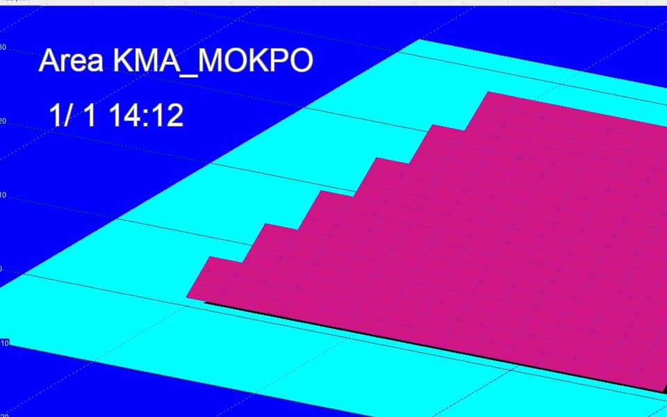

쏠라프로 2강: 마법사 다섯 단계로 97.2 kW 평지 발전소 만들기
쏠라프로 마법사(Wizard) 다섯 단계로 지역, 모듈과 용량, 설치 형태, 줄과 간격, 경사와 결선을 넣어 가상 목포 평지 발전소 97.2 kW를 만듭니다.
발행 2026-11-11 · 갱신 2026-11-12
강의 요약
영상의 음성 내용을 글로 정리했습니다. 예제는 모두 가상 발전소입니다.
쏠라프로 2강은 마법사 다섯 단계로 첫 발전소를 만듭니다. File 메뉴의 New를 누르고, 새로 시작할지 묻는 창에서 예를 누릅니다. 예제는 가상의 목포 평지 발전소입니다.
첫 단계는 지역입니다. 기상 자료는 Additional Points, 나라는 Korea, 지역은 목포를 고르면 아래에 북위 34° 49′, 동경 126° 23′이 나옵니다. 둘째 단계는 모듈과 용량입니다. 제조사와 모델에서 360 W 모듈을 고르고, 용량으로 계산하기에 97.2 kW를 넣어 계산을 누르면 270장이 나옵니다. 셋째는 설치 형태로, 여러 지붕 모양 가운데 평평한 땅인 Ground based를 고릅니다.
넷째 단계 A에서는 줄을 나눕니다. 어레이는 6줄, 한 줄에 가로 15장, 세로 3단으로 45장입니다. 모두 270장, 97.2 kW로 맞습니다. 넷째 단계 B는 줄 간격입니다. 처음 B 값은 2 m이고, 아래 가이드 간격(Guide interval)은 5.936 m입니다. 동지 남중 앞뒤 3시간 동안 앞줄 그늘이 뒷줄에 닿지 않는 간격이라 이 값을 B 칸에 넣습니다. 3강에서 바로잡은 내용이 있습니다. 5.936 m는 피치, 곧 앞줄 앞끝에서 뒷줄 앞끝까지의 거리이고, 줄 사이 빈 거리는 약 3.36 m입니다.
마지막 다섯째 단계는 경사 30°, 방위 0°(정남)입니다. 인버터 한 대에 병렬 15줄, 직렬 18장을 넣고 OK를 누르면 장면이 바로 만들어집니다. 지역 이름이 목포로 바뀌고 6줄에 270장, 97.2 kW 발전소가 나옵니다. Shading 메뉴의 Time Tracking Bar를 켜면 위에 시간 막대가 생기고, 막대를 끌어 정오와 오후 2시의 그림자를 보면 앞줄 그림자가 뒷줄에 닿지 않습니다. File 메뉴의 Save As로 저장하면 .sol 파일 하나에 장면과 결선이 다 들어갑니다.
정리하면 지역, 모듈과 용량, 설치 형태, 줄과 간격, 경사와 결선. 이 다섯 단계면 평지 발전소 하나가 만들어집니다. 다만 가이드 간격은 동지 앞뒤 3시간 기준일 뿐이라, 땅의 경사와 이격 규정까지 맞추는 것은 따로 봐야 합니다. 이 강에서 만든 장면은 자료 받기의 쏠라프로 기초 연습 파일로 드립니다.
화면 메뉴와 핵심 숫자
화면 메뉴 이름
| 화면 영어 이름 | 뜻 |
|---|---|
| File · New | 새 장면 |
| Wizard | 마법사(다섯 단계) |
| Additional Points | 추가 기상 지점 묶음 |
| Calculate by capacity | 용량으로 장수 계산 |
| Ground based | 평지 설치 |
| Step 4A · Array | 줄 나누기 |
| Step 4B · B | 줄 간격(피치) |
| Guide interval | 동지 기준 권장 간격 |
| Tilt · Azimuth | 경사 · 방위(정남 0°) |
| Time Tracking Bar | 시간 막대 |
| Save As (.sol) | 장면·결선 저장 |
핵심 숫자
| 항목 | 값 |
|---|---|
| 지역 | 목포, 북위 34° 49′, 동경 126° 23′ |
| 모듈 · 용량 | 360 W × 270장 = 97.2 kW |
| 배열 | 6줄 × (가로 15 × 세로 3단 = 45장) |
| 줄 간격 | 가이드 5.936 m(피치), 빈 거리 약 3.36 m |
| 경사 · 방위 | 30° · 0°(정남) |
| 결선 | 인버터 1대, 직렬 18 × 병렬 15 |
자주 묻는 질문
쏠라프로 마법사는 몇 단계인가요?
다섯 단계입니다. 지역, 모듈과 용량, 설치 형태, 줄과 간격(4A·4B), 경사와 결선 순서로 넣으면 장면이 바로 만들어집니다.
가이드 간격 5.936 m는 줄 사이 빈 거리인가요?
아닙니다. 앞줄 앞끝에서 뒷줄 앞끝까지의 피치입니다. 강의 예제에서 줄 사이 빈 거리는 약 3.36 m입니다.
가이드 간격만 따르면 그늘 걱정이 없나요?
가이드 간격은 동지 남중 앞뒤 3시간 기준입니다. 땅의 경사와 이격 규정까지 맞추는 것은 따로 확인해야 합니다.
English summary
Lesson 2 builds a first plant with the Solar Pro five step wizard. Step 1 picks Additional Points, Korea, Mokpo (34° 49' N, 126° 23' E). Step 2 picks a 360 W module and calculates 270 modules for 97.2 kW. Step 3 chooses Ground based. Step 4A splits the array into 6 rows of 15 by 3 modules (45 per row), and step 4B sets the row pitch to the 5.936 m guide interval, which keeps front row shade off the next row for three hours either side of winter solstice noon. The clear gap between rows is about 3.36 m. Step 5 sets 30° tilt, due south, and one inverter with 18 in series by 15 strings. English subtitles are available on YouTube (CC). Read this lesson in English
강의 자료 받기
유튜브 채널을 구독하시면 자료가 열립니다
- 아래 빨간 단추를 누르면 유튜브 구독 창이 새로 열립니다.
- 구독을 마치고 이 창으로 돌아오시면 내려받기 단추가 열립니다.
자료는 무료이고 회원가입이 없습니다. 이미 구독 중이시면 같은 단추를 누르고 돌아오시면 됩니다. 한 번 열면 이 브라우저에서는 계속 열려 있습니다.
자료가 열렸습니다. 구독해 주셔서 고맙습니다.

다른 강의 자료와 계산서 견본은 강의 자료 받기 쪽에 모았습니다. 자료는 공부와 참고용입니다. 예제와 견본의 숫자는 가상 발전소이거나 위치를 지운 사례입니다. 실제 설계는 현장 조건을 확인해야 합니다.